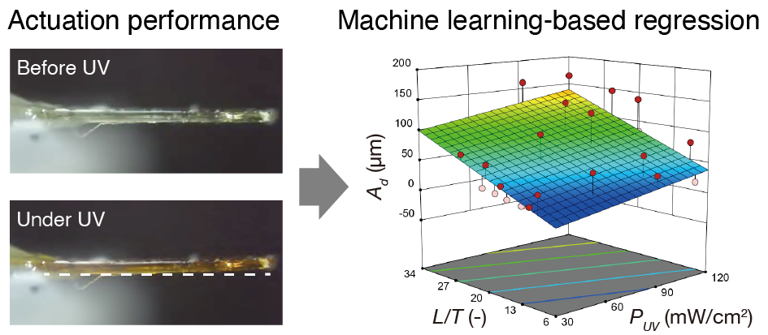
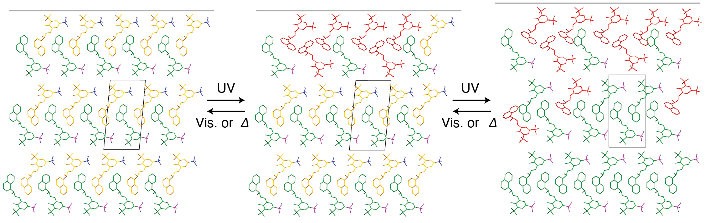

研究内容
機械学習による新規材料探索
機械学習は、多数の材料のデータで構成されたデータセットから、材料開発のための知見を得るための手段です。
Pythonなどのプログラミング言語を使い、これまでに蓄積してきたデータセットから知見を見出し、新しい材料を開発することを目指しています。
例えば、有機分子は構造式によって2次元で表すことができますが、様々な手法によってその分子構造をベクトル化またはグラフ化することができます。
分子を数理に表現することで機械学習(ML)によって分析でき、求める物性値をもつ分子構造の設計につなげることができます。

統計モデリングによる機能制御
材料の機能は多くの場合実験条件に依存しており、外部条件（温度や光強度、波長etc.）や材料自体のサイズや形状によって出力が異なります。 そのため、どういった条件のときにどれくらいの出力があるかという関係性を実験だけで得ようとすると、異なる条件で膨大な数の実験をする必要があります。 この問題を解消するには、データ科学を活用して実験条件と出力の関係性を数理的に表現することが有効です。 これまでに、光を当てると曲がる結晶（フォトメカニカル結晶）の屈曲挙動を、機械学習に基づく回帰分析によって数理的に表現することに成功しています。(CrystEngComm, 2021)。 
刺激応答性メカニカル結晶
結晶材料は一般的に硬いものと思われがちですが、光や熱といった刺激によって大きく変形できるメカニカル結晶が見出され、ソフトアクチュエータ材料としての活用が期待されています。 博士課程での研究で、光異性化や熱相転移、ならびに光トリガー相転移(下図)という新しい相転移機構でメカニカル機能を創出してきました。 現在は、データ科学も活用しながら、メカニカル結晶の力学特性の評価や光トリガー相転移の動的挙動解析、新規結晶の創製を行っています。 